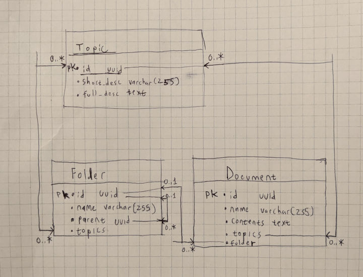

This is my published example of the Take-Home coding project for Spekit. It was published on the weekend of 9/11/2021.
It is deployed on Heroku at https://cryptic-crag-50223.herokuapp.com/ (Note: this will lead to a 404 as this is not a defined endpoint in the REST service). For usage and documentation of the REST API service for the document store, see the Swagger UI Spec.
The initial design was based on the following ER diagram for the Document, Folder, and Topic entities:

The above is hand-drawn, as I ran into difficulties using online diagramming services and Dia was not working properly on my device. Hopefully, it is still clear what is being communicated here, if not we can always drill down into it and address any missing items.
For further documention on the REST service itself, see the Swagger UI Spec. There is no better way to demonstrate the functionality of the service than by giving it a try!
In particular, try GET /documents/ and try filtering by folder or topic!
:wq